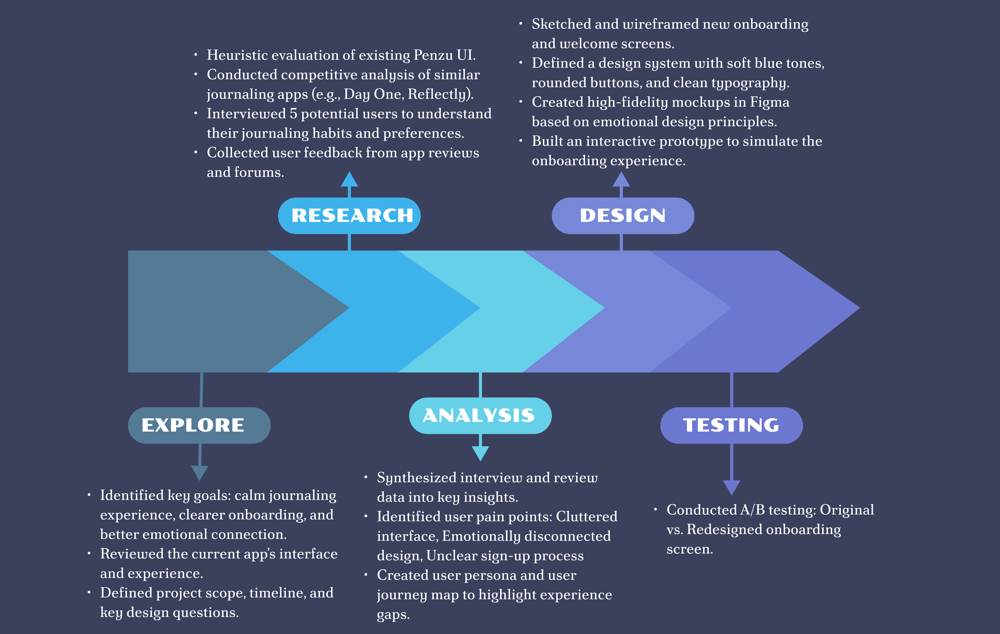
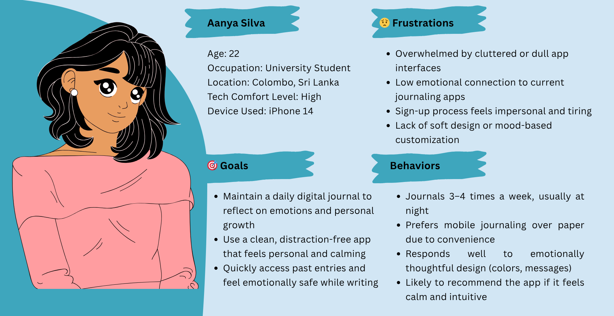

At-a-Glance
Project Type: Website Redesign
Focus: Enhance onboarding clarity, visual harmony, and emotional connection through thoughtful UI/UX improvements.
Primary Goal: Redesign the Penzu app to offer a calm, emotionally engaging, and user-friendly journaling experience.
Timeline
2 Weeks
My Role
UI/UX Designer
Platform
Figma
Problem
1. The app’s interface lacked visual harmony and a calming design suited for journaling.
2. The onboarding screen felt outdated, cluttered, and disconnected from the app’s purpose.
3. Users experienced low emotional connection and found the app uninviting.
4. Limited feature visibility led to poor engagement and low user retention.
Solution
1. Redesigned the onboarding screen with a clean, calming visual layout using a soft blue color palette.
2. Simplified the sign-in/sign-up flow with improved button hierarchy and clear CTAs.
3. Created a consistent design system to enhance usability and visual identity across the app.
4. Focused on emotional design to build a stronger personal connection and increase user engagement.
This video showcases the UI/UX redesign of the Penzu journaling app. Focused on creating a calm and emotionally engaging experience, the new design improves onboarding clarity, button hierarchy, and overall visual harmony. Watch how we transformed the user journey from cluttered and outdated to clean, intuitive, and welcoming.
Process
Persona
User Journey Map

Wireframes
Low-Fidelity

High-fidelity

Design System
- Color Palette: Calming, Universally Appealing & Trustworthy tones.
Calming & Trustworthy: Blue evokes feelings of peace, stability, and reliability—ideal for apps meant for writing, reflection, or emotional sharing.
Universally Appealing: Blue is one of the most liked colors globally, making the design feel accessible and comforting to many.
Clarity & Focus: Blue tones support a clean look that doesn’t overwhelm, making it easier to read and engage with the content.
Monochromatic #4B86B4 – Deep Blue (Primary action and CTAs) #A6C8E2 – Soft Blue #D2E6F4 – Light Blue #E3F2FD – Very Light Blue These colors maintain a calm, cohesive tone while allowing for clear visual hierarchy and focus areas. .
- Typography: Playfair Display-A serif font used for its elegant, emotional, and readable style.
- Icons & Imagery: Minimal line-style icon.
Design Changes
Clean, Intuitive Layout
- Modern, minimal UI with calming visuals

Revamped Record Page
- Clean and structured layout
- Improved typography and spacing for better readability

New Feature Additions
- Text alignment options (left, center, right)
- Font selection and size adjustment
- Background customization (colors, patterns)
- Added stickers and mood tags for expressive journaling


User Testing (A/B Testing for Redesign)
Conducted A/B testing on two versions of the Record Page and Sign In/Sign Up screens.
Tested visual changes like font type (Playfair), color palette (monochrome blues),
and added features (text alignment, stickers, background themes).
Shared mockups with a small group of users and collected feedback via Google Forms and user
interviews.
Measured engagement (scroll rate, time spent, feature usage) to compare responses to original vs.
redesigned versions.
Key Findings from A/B Testing:
- Users preferred the monochromatic blue theme for its calming and focused mood.
- The new font and alignment options improved readability and writing comfort.
- Majority of users found the sticker and background features fun and expressive.
- The updated Sign In/Sign Up flow led to a smoother onboarding experience.
- Usability score improved with clearer navigation and better layout structure.
Key Takeaways
Personalization Increases User Engagement: Customizable features like
font styles, backgrounds, and stickers helped users feel more connected to their journal
entries.
Consistent Design System Enhances Trust: A unified visual system made the
app feel more polished and reliable across all pages.
User-Centered Design Outperforms Assumptions: Designs that were guided by
actual
user feedback worked better than those based solely on personal preference.
CA/B Testing Validates Design Decisions: Side-by-side testing of design
variations
helped confirm which version users preferred before making final changes.
Small UI Tweaks Have Big Impact: Adjustments like improved button
placements and spacing improved overall usability and aesthetics.
Final Thoughts
Redesigning Penzu taught me how UI/UX isn’t just about looks — it’s about improving the user’s
emotional experience.
The process made me more confident in using user-centered design practices and gathering
meaningful feedback.
I realized that good design is iterative, not a one-time job.
Future Improvements
data export/backup features:
Add data export/backup features for better journaling security.
voice-to-text :
Introduce voice-to-text journaling support.
mobile responsiveness:
Improve mobile responsiveness for a smoother experience on different devices.
Implement AI-Powered writing prompts:
Explore AI-powered writing prompts for users with writer’s block.
dark mode :Add a dark mode option for nighttime writing.